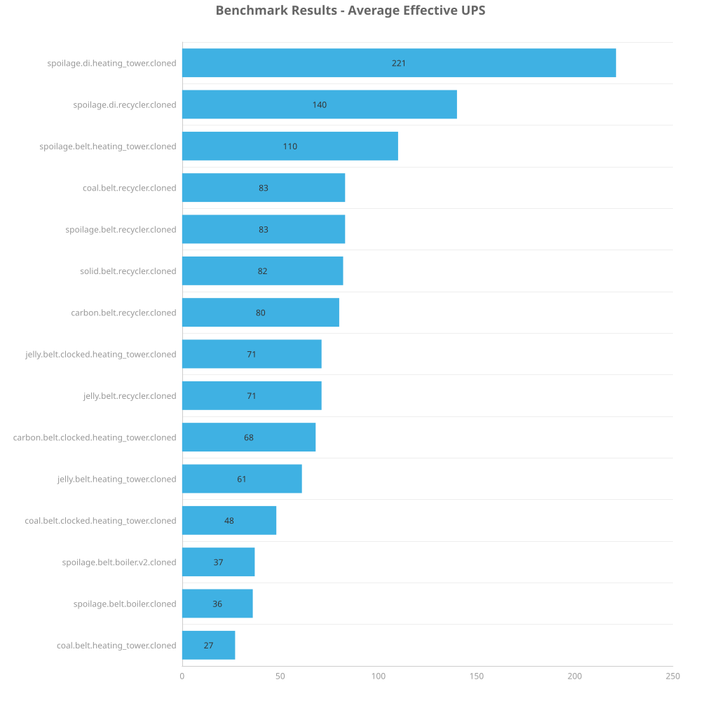

Spoilage is the only worthwhile item to put in heating towers. Jelly was a tie. And everything with a greater fuel value is better in a recycler.
For fuel based items, what is the best way to void it? Note that this test isn't necessarily going to test the best overall way of voiding these items, rather, it tests the exclusive ways to void burnable items (in a burner).
The focus of this test is exclusively to throw away excess or unwanted items, so upcycling is not a consideration.
The test does not consider byproducts of burning eg: power generation or heat on Aquilo. Focus is simply on getting rid of the items.
Looking at fuel values in the table below, only items which could possibly make sense to void in a megabase context will be tested.
| Item | Fuel value | Could be relevant to void for megabase? |
|---|---|---|
| Tree seed | 100 kJ | No |
| Spoilage | 250 kJ | Yes |
| Yumako mash | 1 MJ | Yes (uncommon+) |
| Jelly | 1 MJ | Yes (uncommon+) |
| Wood | 2 MJ | No |
| Carbon | 2 MJ | Maybe? |
| Yumako | 2 MJ | No |
| Coal | 4 MJ | Yes (uncommon+) |
| Yumako seed | 4 MJ | No |
| Jellynut seed | 4 MJ | No |
| Pentapod egg | 5 MJ | No |
| Biter egg | 6 MJ | No |
| Jellynut | 10 MJ | No |
| Solid fuel | 12 MJ | Yes (Fulgora, potential oil processing byproducts) |
| Rocket fuel | 100 MJ | No |
Test was performed by benchmarking the saves using the inbuilt Factorio benchmark. Each save was tested 3 times for 1000 ticks a piece

| Metric | Description |
|---|---|
| Mean UPS | Updates per second - higher is better |
| Mean Avg (ms) | Average frame time - lower is better |
| Mean Min (ms) | Minimum frame time - lower is better |
| Mean Max (ms) | Maximum frame time - lower is better |
| Save | Avg (ms) | Min (ms) | Max (ms) | UPS | Execution Time (ms) |
|---|---|---|---|---|---|
| coal.belt.heating_tower.cloned | 37.372 | 29.113 | 159.567 | 26 | 112116 |
| spoilage.belt.boiler.cloned | 27.599 | 19.396 | 47.784 | 36 | 82796 |
| spoilage.belt.boiler.v2.cloned | 26.785 | 18.043 | 45.423 | 37 | 80355 |
| coal.belt.clocked.heating_tower.cloned | 20.845 | 12.795 | 152.238 | 47 | 62534 |
| jelly.belt.heating_tower.cloned | 16.406 | 9.310 | 50.624 | 60 | 49218 |
| carbon.belt.clocked.heating_tower.cloned | 14.656 | 7.100 | 80.862 | 68 | 43966 |
| jelly.belt.recycler.cloned | 14.090 | 3.183 | 34.296 | 70 | 42268 |
| jelly.belt.clocked.heating_tower.cloned | 14.075 | 5.042 | 55.293 | 71 | 42223 |
| carbon.belt.recycler.cloned | 12.438 | 7.702 | 28.537 | 80 | 37313 |
| solid.belt.recycler.cloned | 12.174 | 4.068 | 31.388 | 82 | 36523 |
| spoilage.belt.recycler.cloned | 12.086 | 4.158 | 31.833 | 82 | 36258 |
| coal.belt.recycler.cloned | 12.072 | 3.995 | 29.355 | 82 | 36215 |
| spoilage.belt.heating_tower.cloned | 9.111 | 3.914 | 31.440 | 109 | 27334 |
| Save | Avg (ms) | Min (ms) | Max (ms) | UPS | Execution Time (ms) |
|---|---|---|---|---|---|
| spoilage.di.recycler.cloned | 7.145 | 0.428 | 24.290 | 139 | 21433 |
| spoilage.di.heating_tower.cloned | 4.526 | 0.665 | 21.868 | 220 | 13577 |
For spoilage, the winner was heating towers (di/belt cases both). Jelly was a tie. For all other fuels, recycler shuffle was the best option.
Considering how bad the performance got with heating tower coal, solid fuel was omitted.
All maps will be uploaded here.
When considering just eliminating waste products, heating towers were better for spoilage and recyclers were better for all other tested items.